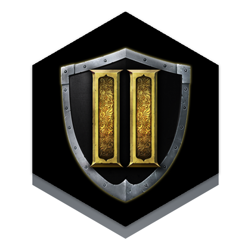

En Chivalry hay muchas armas: armas de asta, de perforación, de golpe contundente. todas son mortiferas y letales, pero sin duda el unico arma de la cual el jugador debe de tener miedo es de la ira de un jugador al que le acaban de arrancar los brazos esto se debe a que sin poder usar armas por carencia de manos, usara su propia cabeza persiguiendo a su adversario hasta darle muerte